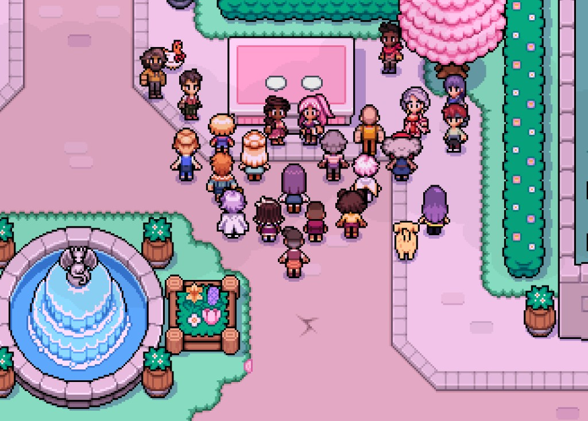
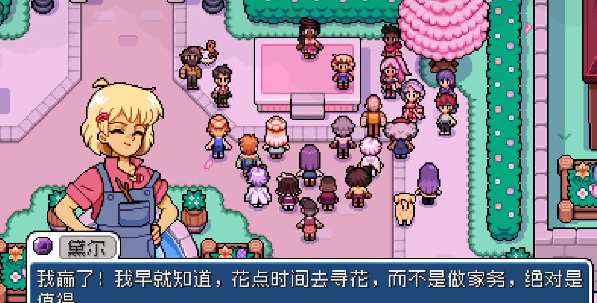
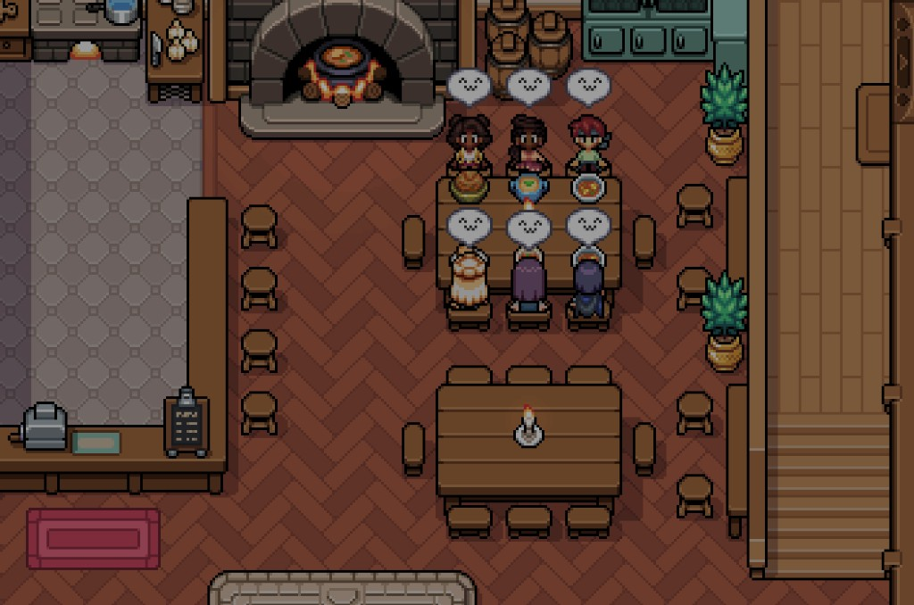
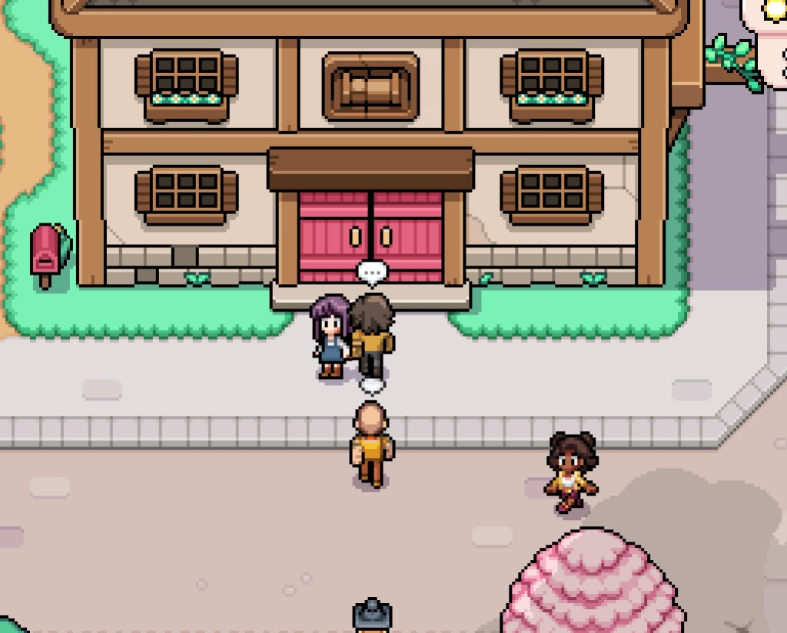

Quick answers
- Water before you dress up for town.
- Talk, watch, leave with energy left.
- Missing a prize is not a restart.
- Friday inn gatherings are social, not mandatory homework.
- Read mail so you know which day to show up.
How we attended
We showed up, talked to a few people, and went home. No spreadsheet of festival min-max.
Inn nights
Sleeping Dragon Inn dinners are cozy. Go when crops are safe. Josephine and friends can wait a week.
Safe to skip
- Winning every minigame
- Romance deadlines at first festivals
Screenshots from our save
Real Fields of Mistria shots from our first-season play. Captions in English; in-game UI language may differ.




FAQ
Missed the event time?
Farm on. Another calendar beat will come.
Gifts at festivals?
Only if you already carry something safe.
Unofficial fan guide. Not affiliated with NPC Studio. Verify details in your game version.